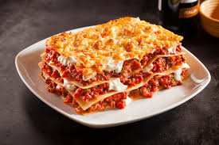

Lasagna

Description
Lasagna is a type of pasta dish made with wide, flat noodles layered with fillings
and baked. Typically, it features layers of pasta, meat sauce (like ragù or
Bolognese), béchamel sauce, vegetables, and various cheeses (ricotta, mozzarella,
Parmesan). The dish is assembled and baked until the cheese is melted and bubbly,
then cut into portions for serving.
Ingredients
- Lasagna noodles (regular or no-boil)
- Ground beef or Italian sausage (or a mix)
- Onion, garlic
- Tomato sauce or crushed tomatoes
- Tomato paste
- Ricotta cheese (or béchamel sauce)
- Mozzarella cheese, shredded
- Parmesan cheese, grated
- Olive oil, salt, pepper, herbs (like basil, oregano)
Steps
- Preheat the oven to 375°F (190°C)
- Prepare the meat sauce:
- Sauté chopped onion and garlic in olive oil.
- Add ground beef/sausage and cook until browned.
- Stir in tomato sauce, tomato paste, herbs, salt, and pepper.
- Simmer for 20–30 minutes to deepen the flavor.
- Prepare the cheese mixture (if using ricotta):
- Mix ricotta with a beaten egg, salt, pepper, and optionally some chopped parsley or grated Parmesan.
- Cook the noodles (if using regular lasagna noodles):
- Boil in salted water until al dente.
- Drain and lay flat on a towel to prevent sticking.
- Assemble the lasagna:
- Spread a thin layer of sauce on the bottom of a baking dish.
- Layer noodles over the sauce.
- Spread ricotta mixture (or béchamel), then meat sauce, then mozzarella.
- Repeat layers: noodles → ricotta → meat sauce → mozzarella.
- Finish with a top layer of noodles, sauce, mozzarella, and Parmesan.
- Bake:
- Cover with foil (tent it so it doesn't stick to cheese).
- Bake for 25–30 minutes.
- Remove foil and bake another 10–15 minutes until bubbly and golden on top.
- Let it rest for 10–15 minutes before slicing. This helps it set and cuts more cleanly.
- Serve and enjoy!
Home